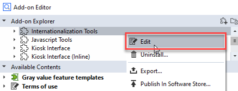
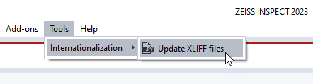
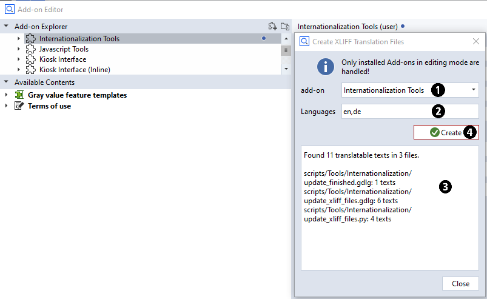
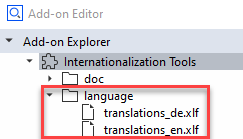
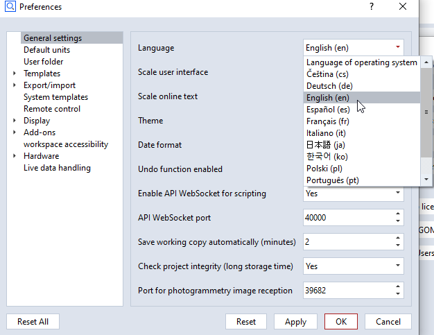

Localization of Add-ons
Writing translatable scripts
User-defined script dialogs
When adding a user defined script dialog to a script, since software version 2022 the resulting code is in JSON compatible format and will contain translation entries for all translatable texts automatically. The user does not have to care for these entries manually. They are kept consistently when the dialog is edited again and will lead to translation file entries (see below).
DIALOG=gom.script.sys.create_user_defined_dialog (dialog={
"content": [
[
{
"columns": 1,
"monospace": False,
"name": "log",
"rows": 1,
"save_dialog_title": {
"id": "",
"text": "Save Log File",
"translatable": True
},
"scroll_automatically": True,
"show_save": False,
"tooltip": {
"id": "",
"text": "",
"translatable": True
},
...
)
Text in scripts
Texts in scripts have to be tagged as translatable via using the tr () function. During translation file generation, these texts will be processed and later replaced at runtime with the available translations.
print (tr ('This text will be translated'))
Translating scripts
Generating translatable XLIFF files
💡 Scripts are using standard XLIFF files to access translations in different languages.
Install Add-on ‘Internationalization’
Install the Add-on ‘Internationalization’ via ZQS Store or the Install/Uninstall Add-ons dialog.
Switch Add-on into ‘Edit’ mode
Select the Add-on the translations should be added to.
Switch it into ‘Edit’ mode:

Execute script ‘Update XLIFF files’

Execute script ‘Update XLIFF files’ from Add-on ‘Internationalization’.
Select the Add-on with the translations which shall be generated or updated (1)
Set the comma separated list of language identifiers for which translation files will be generated (2)
Check the displayed number of translated texts for plausibility (3)
Press ‘Update’ (4) to generate translatable XLIFF files (4)

Afterwards, the Add-on’s XLIFF translatable files will be present in the Add-on’s languages folder:

Translate XLIFF files
Export the XLIFF files via ‘Export Resource…’ in the right mouse button menu.
Translate the XLIFF files. This can be done either manually or by importing them into a translation software, possibly via a translation service provider.
Import the XLIFF files back into the Add-on via ‘Import Resource…’ on the right mouse button menu.
<ns0:xliff xmlns:ns0="urn:oasis:names:tc:xliff:document:1.1" version="1.1">
<file original="DL_ANALYSIS_01_curve_based.py" datatype="py" source-language="en" target-language="de">
<group restype="x-gettext-domain" resname="">
<trans-unit id="Save Log File">
<source xml:space="preserve">Save Log File</source>
<target xml:space="preserve">Protokolldatei speichern</target>
</trans-unit>
<trans-unit id="Curve inspection">
<source xml:space="preserve">Curve inspection</source>
<target xml:space="preserve">Kurveninspektion</target>
</trans-unit>
<trans-unit id="Processing...">
<source xml:space="preserve">Processing...</source>
<target xml:space="preserve">In Bearbeitung...</target>
</trans-unit>
</group>
</file>
</ns0:xliff>
Switching Add-on languages
Enable language
💡 The Add-on language is the same as the globally set application language.
Selecting an Add-on/application language
Select the appropriate language the the applications preferences dialog.

If a matching XLIFF file is present in an Add-on, the translations from this file are used automatically.
This might require an application restart due to caching issues.
FAQ
Is there a shortcut for exporting/importing the XLIFF files?
If there are quite many of these files and the process has to be done regularly, the resource files can be accessed right on file system.
Each Add-on in ‘Edit’ mode mirrors its content into
%APPDATA%/gom/<version>/gom_edited_addons/<add-on uuid>.The XLIFF files can be edited right there or copied/pasted from there as long as the Add-on remains in ‘Edit’ mode.
Are the translation entries persistent when updated via the ‘Update XLIFF files’ script?
As long as the original texts (the texts in the ‘id’ attribute of the ‘trans-unit’ tag of the XLIFF files) are not changing, already translated entries are left untouched and will persist.
This is the case when the original text in the script does not change, like the text in a dialog button or the original text in a scripts ‘tr ()’ function.
Can this scheme be automated, for example in a build queue ?
The ‘Update XLIFF files’ script itself is designed to be interactive.
But: The source is available and the logic within can be used as a base to implement a customized XLIFF files updater to automatic execution.
The goal of the scheme is to have translated XLIFF files with a name scheme as shown above in the Add-on’s ‘language’ directory.
Why is the Add-on not displaying the translations after changing the application language in the preferences?
You might have to restart the application after switching the application language in the preferences.
Please double check, too, if the Add-on supports that specific language at all.